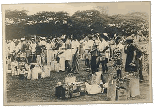

|
j
a v a s c r i p t |
January 9, 1942
Biked to Santo Tomas and got there too late. Heard that only canned food was being let in so we went to S. K. Walter’s, where a Swiss friend allowed us to stock up. We bought what we could: 24 boxes of Planter’s Peanuts and 9 cans of biscuits, also 9 cans of lemon drops and a case of a chocolate drink — we figure the children there, particularly the Da Silva’s two tots, could use it. The Escolta was a mess: cars parked on the wrong side or five feet off the curb ... fenders all smashed. Surveillance is constant and military men are going house to house asking questions. They visited ours today but Ma handled it well. Gestapo agents are also active, reporting their enemies to the Japanese.

Internees arrive at the Santo Tomas Internment Camp.
Biked back to Santo Tomas in the afternoon and got our food across. It took some effort to prevent the 48 cans of chocolate from rattling lest a sentry think I was carrying beer. The place was a mess with people jumping up and down trying to spot a familiar face; servants carrying food looking for their masters; bosses and employees yelling across the fence, and all struggling to understand each other above the din. Things will get tough when the bosses run out of money or when the canned goods (mostly U.S. imports) run out. Maurice threw a wrapped message that hit its target in the right cheek. We wanted to know about the food situation, and yelled the question three times because the answer was incredible. All they had by 1500 was a morning cup of coffee, and our note said that we’d deliver food only once a week! We agreed to come twice a week. KGEI at 1700 warned us not to accept “Jap counterfeit money.” It’s absurd because we can’t refuse it; and if we tried they’d just take our goods. Today, the Japanese were busy emptying some hardware stores. Most are owned by Chinese, and chances are they aren't being asked or given the proverbial receipt. |
|
|
|
|